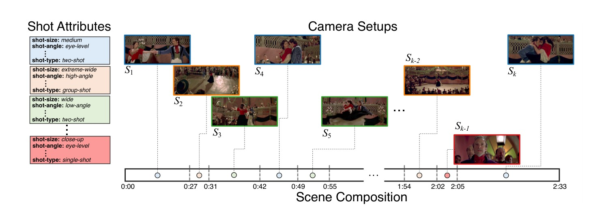

Projects
AI features I've worked on across Meta and Adobe — from foundation media generation models to computer vision tools that power video editing.
Muse Image & Muse Video
Meta Superintelligence Labs' first media generation models, launched together on a unified pretraining framework. Muse Image runs through an agentic workflow — writing and executing code for precise detail, grounding outputs in real-time web search, and composing across multiple reference images. Muse Video is an early preview of Meta's video generation efforts, producing clips with native audio and consistent motion. Live in the Meta AI app, Instagram, and WhatsApp.
 Adobe
Adobe
Adobe Firefly
A generative AI model family for creative expression, enabling high-quality image generation and editing through simple text prompts. Shipped in Photoshop, Illustrator, and Adobe Express.
Official Announcement → Adobe
Adobe
Auto Reframe
Automatically identifies the main action in a video and reframes it for different aspect ratios (9:16, 1:1, 4:5), saving hours of manual editing. Shipped in Premiere Pro, Premiere Rush, and Adobe Experience Manager.
Official Announcement → Adobe
Adobe
Scene Edit Detection
Automatically detects cut points in a rendered video file, allowing editors to quickly add transitions or adjustments to individual scenes without manual searching. Shipped in Premiere Pro.
Official Announcement →Smart Tagging for Adobe Stock
Uses machine learning to automatically generate descriptive tags for images and videos, improving searchability and discoverability for millions of assets.
Official Announcement →Video Background Removal
Powered by Adobe Sensei, this feature allows for one-click background removal from video clips, enabling complex compositing tasks in seconds.
Adobe Express Feature →
AdobeShot Size and Angle Control Models
Deep learning models that classify shot size (close-up, medium, wide) and camera angle in video, supporting cinematography-aware, shot-level video editing tools.